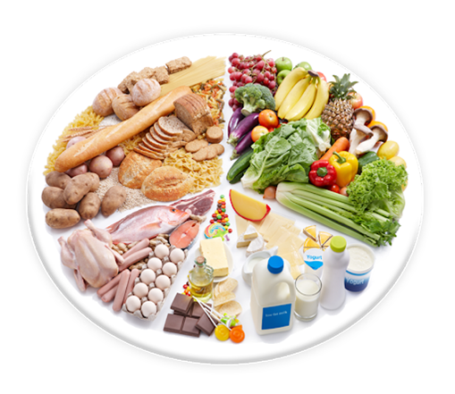
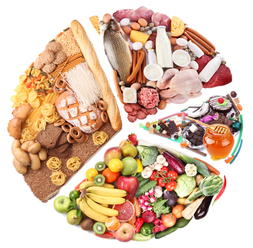

Recepie One

Healthy-Seafood idea
8 Steps Beginners Should Take Before Trying the Keto Diet
It depends on which version of keto you’re doing, but generally, you’ll aim to get 5 to 10 percent
of your total calories from carbs on the diet. The goal is to consume only 20 to 50 grams (g) of net
carbs per day — or less than the equivalent of ½ cup of long-grain brown rice, which contains 25 g
of total carbs (and about 23 g net carbs), according to the U.S. Department of Agriculture (USDA).
US. Food Journal
Net carbs, which are an unofficial term, are defined as total carbs minus fiber and sugar alcohols,
according to the website for the Atkins diet, another low-carb plan. For most people, going that low
won’t be easy:
Recipe Two

Seafood-Veg. Salaad Combination
When cooking with heart health in mind, portion sizes are just as important as ingredients. This
heart healthy cookbook saves you the guesswork of what and how much to eat with perfectly portioned
recipes.
In this cookbook you will learn:
Breakfasts, Poultry, Beef, Fish and Seafood, Vegetarian,
Soups and Stews, Chilies, Salads,
>
Side Dishes
Potatoes, Pasta, Rice, and Other Grains
Quick Breads, Yeast Breads, Cookies, Fruit Desserts,
Grain, Nut, and Legume Desserts,
Sauces, Condiments, Mixes, and Spice Blends
Don’t wait another second to get this life-changing book. Start Eating Healthy and Tasty Meals!
Recepie Three

Balanced Nutration
NO MESSY COLORING – With This Book you get one coloring page per sheet, so your kids can use their
crayons, pens, colored pencils or markers without the colors bleeding into the other sketch.
This HEALTHY FOOD Coloring Book for Kids is perfect for young ages boys and girls. Coloring book for
kindergarten 4-6, or school children 6-8. and even older kids 8+.
Coloring Food Books for Kids
This book is a coloring book, not an advise book. For personal advice or assistance for diet related
health issues, you should seek professional medical advice from your General Practitioner or
Accredited Practicing Dietitian. This book is not a vegan or vegetarian oriented book.